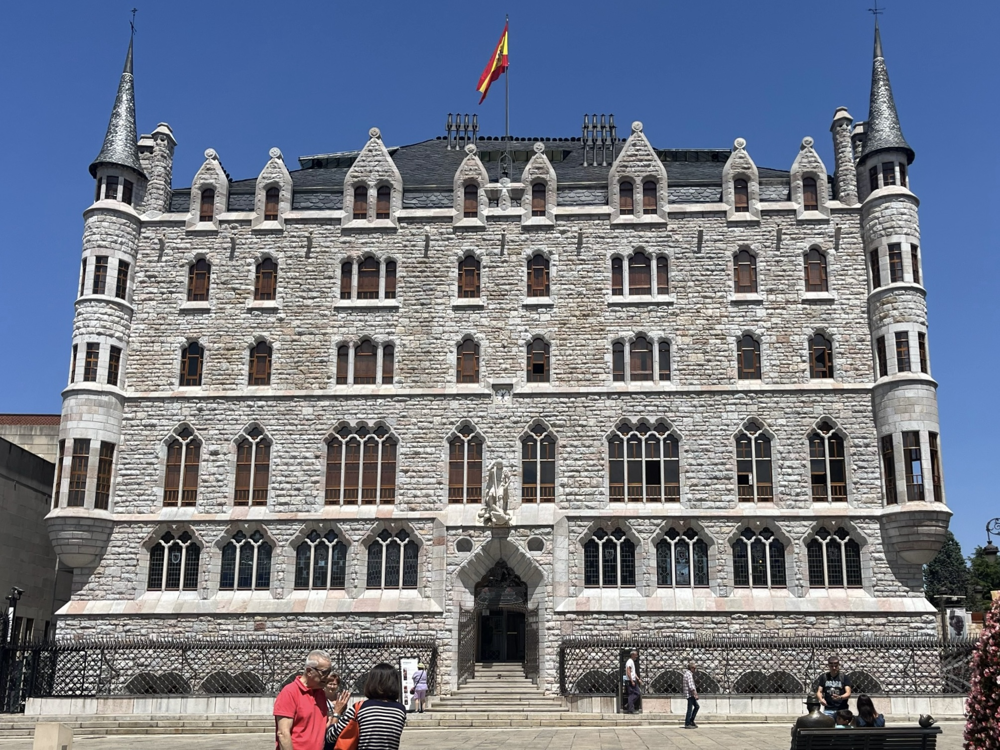
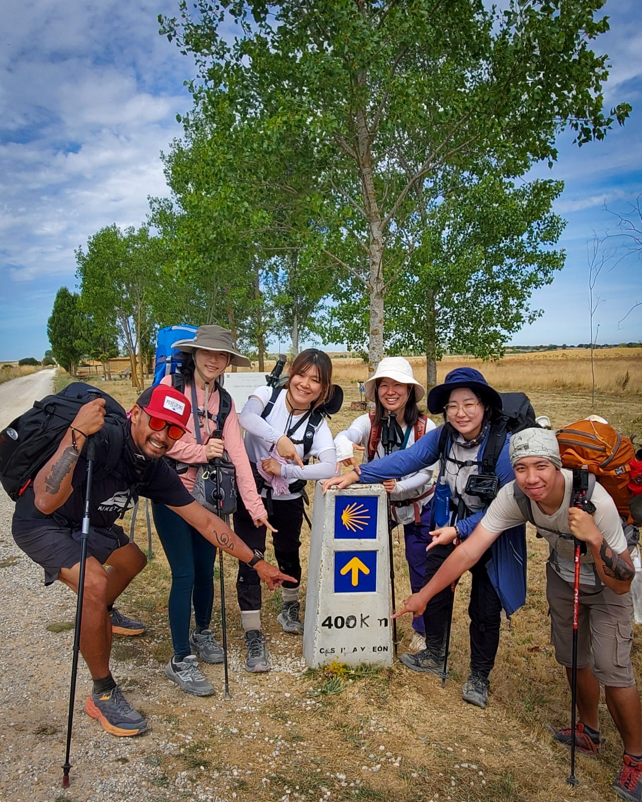
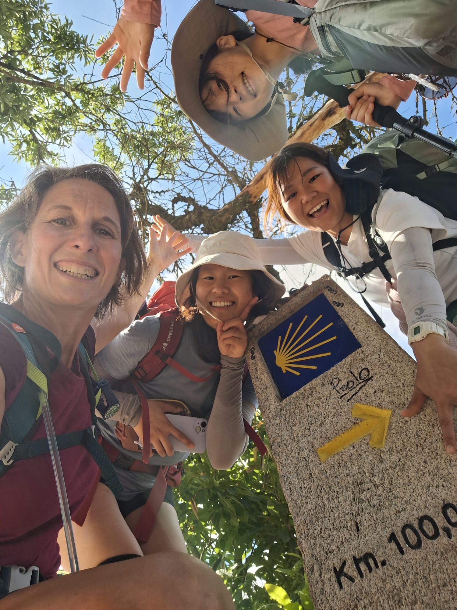
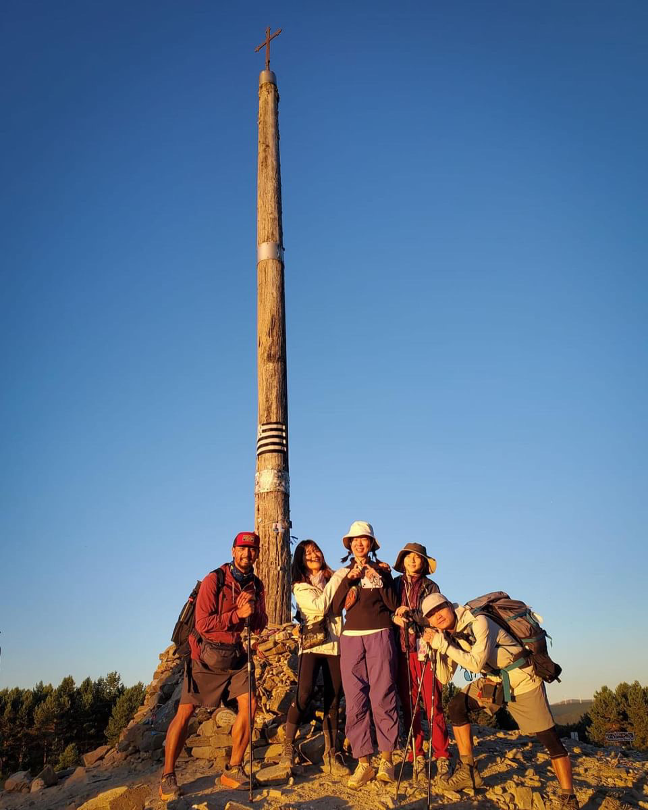
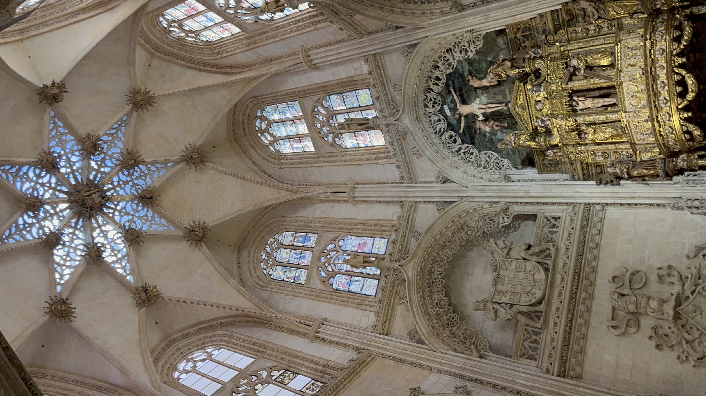

回首頁
Responsive Image Gallery
Castrojeriz
Castle of Castrojeriz
Catedral de Leon
Palacio de Gaudi Astroga
Palacio de Gaudi Astroga
Mirador Alto del Perdon
Antiguo convento de San Anton

Casa Botines

400km of camino de Santiago
Palacio de Gaudi Astroga
on the way camino
Catedral de Leon
the way before Cruz de Ferro
Cruz de Ferro
morning light
Pamplona San Fermin
Burgos Mirador del Castillo
Castle of Castrojeriz

400km of camino de Santiago

Cruz de Ferro

Catedral De Burgos